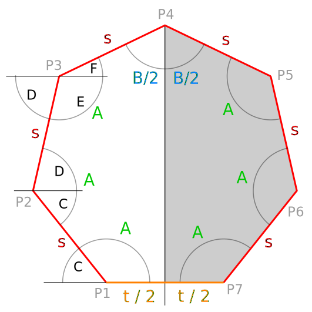

Heptagons families
AsAsAsBsAsAsAt
Formulas

The heptagon at the right has six equal angles A and a single angle B. Also has six equal sides s and a single side
t.
- At vertex P1 there are two angles
-
A and C = π - A
- At vertex P2 there are two angles
-
C and D = A - C
- At vertex P3 there are three angles
-
D, E = π - D and F = A - E
- Simplifying, we get
-
D = 2A - π
F = 3A - 2π
- So, the value of seventh side t can be found
-
t = 2s[ cos(A) + cos(D) + cos(F) ]
= 2s[ cos(A) + cos(2A - π) + cos(3A - 2π) ]
- For any heptagon with six angles A and one angle B we have
-
B = 4π - 6A
Iterator
Define the iterator i = B / A as a real number
ranging from zero to infinity.
- Then, angle A can be described as factor of the iterator:
-
A = 4π / (i + 6)